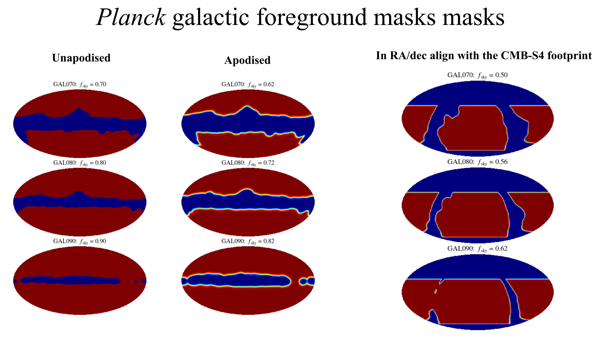

Data and products
The repository ships both the input data that the pipeline reads, and the ILC
residual products and lensing noise curves for a range of experimental
configurations that have been pre-computed. Inputs are contained in data/
and the released products can be accessed under products/.
Input data
Fiducial cosmology. data/output_planck_r_0.0_2015_cosmo_lensedCls.dat
holds the lensed CMB power spectra used as the fiducial signal. The parameter
values, the step sizes for the numerical derivatives and the foreground
configuration are read from params.ini at the repository root.
Galactic spectra. data/galactic/ holds the dust and synchrotron power
spectra as precomputed pySM3 outputs (based on these simulations),
evaluated on the masked sky.
PySM 3 itself is not run
by this repository. The simulations carry no galactic \(TE\), so it is
constructed from the other two spectra as
\(C_\ell^{TE} = \rho_{TE} \sqrt{C_\ell^{TT} C_\ell^{EE}}\) (§3.1 of
arXiv:2608.XXXXX), with \(\rho_{TE} = 0.35\) and 0 for dust and synchrotron,
respectively.
Extragalactic templates. data/george_plot_bestfit_line.sav contains
the South Pole Telescope best-fit extragalactic foreground power spectra from
George et al. (2015), which are the amplitudes and frequency scalings applied in
foregrounds. Five further template files are shipped, but not used in
the current pipeline:
data/dl_shaw_tsz_s10_153ghz_norm1_fake12000.txt and
data/cl_tsz_148_batt.dat for the thermal Sunyaev-Zel’dovich effect,
data/dl_ksz_CSFplusPATCHY_13sep2011_norm1_fake12000.txt for the kinematic
Sunyaev-Zel’dovich effect, data/dl_cib_1halo_norm1_12000.txt and
data/dl_cib_2halo_norm1_12000.txt for the cosmic infrared background.
Survey noise levels.
data/cmbs4_chile_opt_survey_patch_noise_levels.npy holds the per-patch
white-noise levels for the CMB-S4 Chile-only revised configuration, tabulated
in §2.4 of arXiv:2608.XXXXX. All other configurations have their specifications coded
directly in exp_specs.get_exp_specs().
Released products
products/ contains three trees, produced at different times and with
different configurations. Each holds ILC residual power spectra as .npy
files, with lensing-noise curves alongside them where available. Products from
the same experiment can appear in more than one tree, with the later generation
superseding the earlier one where they overlap.
CMB-S4
products/202310xx_PBDR_config/
The two-site conceptual design of §2.2 of arXiv:2608.XXXXX, referred to in the
repository as the preliminary baseline design or PBDR. Contains
s4deepv3r025_202310xx_pbdr_config for the CMB-S4 Ultra-deep survey at the
South Pole, s4wide_202310xx_pbdr_config for the CMB-S4 Wide survey in
Chile, and s4wide_achieved_performance_pbdr_202312xx for a variant of the
latter with noise depths scaled from achieved performance.
For s4wide_202310xx_pbdr_config, the tree also provides a scan over
integration time, for1years through for10years. In addition,
lmax_12000/ repeats the same configurations to a higher maximum multipole,
with the results being identical over the shared multipole range. s4wide/
is the pre-PBDR baseline, which differs from s4wide_202310xx_pbdr_config
only in the 27 and 39 GHz beam widths and white-noise levels. 202303xx/ is
an earlier generation of the same configuration and is superseded by its parent
directory.
products/s4_all_chile_config/
The Chile-only revised configuration of §2.4 of arXiv:2608.XXXXX. While two subtrees
are currently included, report/lmax_6500/ is the authoritative branch. It
covers advanced_so_goal, lat_delensing---patch1 and
lat_wide---patch2 combined with advanced_so_goal, scanning the survey
year from ---year1.0 to ---year15.0 for the SO-like telescope and from
---year1.0 to ---year10.0 for the CMB-S4 surveys. lmax_6500/
contains an earlier generation, which covers a wider set of surveys and all
four patches, but with its noise in polarization incorrectly being the same as
in temperature. Inside the authoritative branch, the
20250530_wrong_1_over_f_definitions/ subdirectory holds a superseded set
computed with different atmospheric-noise definitions (currently only retained
for reference and should not be used).
products/20220726/
The earliest tree, with its s4wide and s4deepv3r025 being superseded by
the PBDR tree. It also contains an lmax_10000/ variant, lensing-noise
curves and the plotting scripts that produced ilc_residuals.png.
Coverage of the paper’s configurations
Configuration |
Released products |
|---|---|
§2.1 Common specifications, including Planck |
No standalone products; only used in forecasting |
§2.2 Two-site conceptual design |
|
§2.3 South-Pole-only alternative |
none [yet] |
§2.4 Chile-only revised configuration |
|
§2.5 Cosmic-variance-limited survey |
none (no ILC performed) |
Within the revised configuration, the three survey components of §2.4 map onto
the product names as follows: lat_wide---patch<N>+advanced_so_goal covers
the sky where the CMB-S4 Hybrid wide survey and the SO-like large-aperture
telescope overlap, lat_delensing---patch<N> is the CMB-S4 Hybrid Delensing
survey, which has no SO combination, and advanced_so_goal alone covers the
sky observed by the SO-like telescope but by neither CMB-S4 survey. Products
exist for patches 1 to 4 in lmax_6500/, while report/lmax_6500/ contains
a more restricted set.
Three further survey variants are released: lat_wide_dc0 corresponds to
calculations based on the CMB-S4 Data Challenge 0 (DC 0), lat_wide_phase2
is from a contingency-driven expansion phase of the CMB-S4 project that was
considered during its design phase and the configuration of lat_roman is
related to the Nancy Grace Roman Space Telescope. The supported names are
listed in full in exp_specs.get_exp_specs().
Simons Observatory
products/20220726/ holds ILC residuals and lensing-noise curves for the
sobaseline and sogoal configurations, computed over the same six
frequency bands as the CMB-S4 products.
products/s4_all_chile_config/ holds products for the upgraded
advanced_so_baseline and advanced_so_goal configurations. The
report/lmax_6500/ subtree scans the survey year from ---year1.0 to
---year15.0.
South Pole Telescope
products/20220726/ holds ILC residuals and lensing-noise curves for
spt3g. These combine three frequency bands and carry the nocorrnoise
token, i.e. they were computed without correlated atmospheric noise between
bands. products/s4_all_chile_config/lmax_6500/ additionally holds
spt3g_plus_spt3g+_WG2, which is an SPT-3G and SPT-3G+ combination.
Filename grammar
Product files are named
<expname>_ilc_galaxy<0|1>_<bands>_<spectra>[_galmask<N>][_AZ|_CU][_withtszxcib]_lmax<L>_for<M>years.npy
with the following tokens:
<expname>The experiment configuration, as accepted by
-expname. The grammar, including the---patch<N>,---year<Y>and+advanced_so_*suffixes, is documented inexp_specs.get_exp_specs().galaxy0/galaxy1Galactic foregrounds excluded or included.
<bands>Band centers in GHz, joined by hyphens, in the order used for the covariance and the weights.
<spectra>The calculated spectra,
TT-EEfor every released product.galmask<N>Galactic mask, present only when
galaxy1.0,1and2select the Planck GAL070, GAL080 and GAL090 masks intersected with the CMB-S4 footprint.
{kind=link}

The Planck GAL070, GAL080 and GAL090 masks intersected with the CMB-S4
footprint, selected by galmask0, galmask1 and galmask2
respectively. The masks themselves are currently not included with the
repository.
_AZ/_CUWhich set of galactic simulations was used. The driver writes
_CUwhen the simulation folder path containsCUmiltaand_AZotherwise, i.e._AZis the default._withtszxcibThe tSZ-CIB correlation was included. Absent by default.
lmax<L>Maximum multipole. Note that the array runs from \(\ell = 0\) to \(\ell = L - 1\), so
lmax6500gives 6500 entries ending at 6499.for<M>yearsIntegration time in years.
Two further tokens appear on some files: nocorrnoise for SPT configurations
computed without correlated atmospheric noise and nulled_<component> for
constrained ILC products in which a component was nulled.
Note: Survey duration is encoded in two different ways. In
products/202310xx_PBDR_config/, it is the for<T>years token in the
filename. In products/s4_all_chile_config/report/ it is the ---year<Y>
token inside the experiment name, with the for<T>years token not reflecting
the depth, but the total survey duration from which the year<Y> noise
levels were derived by rescaling with \(\sqrt{T/Y}\).
In the combined products, the experiment name carries a ---year<Y> token on
each side of the +, as in
s4_all_chile_config_lat_wide---patch2---year1.0+advanced_so_goal---year6.0.
The two differ by five years because the SO-like survey is planned to begin
observations in 2028, five years before the earliest CMB-S4 operational start
of 2033, so it has already accumulated data by the time CMB-S4 comes online
(§2.4 of arXiv:2608.XXXXX).
File format
Each ILC product .npy file holds a single pickled dictionary with at most
the eleven keys below, which is what the current pipeline writes. Older
products hold a subset, so a key should be checked for before it is used.
elMultipole array, shape
(lmax,), running from 0 tolmax - 1. The array index equals the multipole.cl_residualDictionary keyed
'TT'and'EE', each a 1-D array overelgiving the residual power \(C_\ell^\mathrm{res}\) after component separation. These are \(C_\ell\), not \(D_\ell\), in units of μK².weightsDictionary keyed
'TT'and'EE', each of shape(n_bands, lmax). The ILC weights are dimensionless.fg_res_dicDictionary keyed
'TT'and'EE', each a dictionary over the individual componentscib,galdust,galsync,noise,radioandtsz, giving their separate contributions to the residual.beam_noise_dicDictionary keyed
'T'and'P', mapping band frequency to[beam_fwhm_arcmin, white_noise_level].elknee_dicDictionary keyed
'T'and'P', mapping band frequency to the atmospheric (1/f) noise parameters[elknee, alphaknee].fsky_valSky fraction of the mask used.
which_gal_maskGalactic mask index, matching the
galmask<N>token.param_dictThe parameter dictionary read from
params.ini, including the foreground configuration and the paths of the galactic simulation files.cl_multiplier_dicComponent rescaling factors for a partial ILC. Empty in the released products, which use the standard minimum-variance form.
freqcalib_facPer-band calibration factors.
Nonein the released products.
Note that cl_residual is exactly zero below \(\ell = 11\), i.e. the
usable range is \(11 \le \ell <\) lmax.
Lensing-noise curves
The files under lensing_noise_curves/ follow a separate convention. They
are named <expname>_lmin<L>_lmax<L>[_lmaxtt<L>].npy and hold a pickled
dictionary with a different set of keys.
elsMultipole array, running from 0 to
lmaxinclusive, so it haslmax + 1entries rather than thelmaxof the ILC products.Nl_TT,Nl_EE,Nl_ET,Nl_TB,Nl_EB,Nl_MV,Nl_MVpolLensing-reconstruction noise \(N_\ell^{dd}\) for the individual quadratic estimators, for their minimum-variance combination and for the polarization-only combination. These are stored as complex arrays with a vanishing imaginary part and are undefined at \(\ell = 0\).
cl_kkFiducial lensing convergence power spectrum \(C_\ell^{\kappa\kappa}\).
lmin,lmax,lmax_ttMultipole cuts applied to the reconstruction, matching the filename tokens.
lmax_ttis the separate temperature cut.beam_arcmins,noise_T_uKarminsUnused, and left at
Noneand0.0in every released file, because the reconstruction was run from the ILC residuals rather than from a single beam and white-noise level.
Reading the products
get_fisher_forecasts supplies a reader for each kind of file, which can
be used as follows:
import get_fisher_forecasts as gff
ilc = gff.load_ilc_product('<ilc product>')
curves = gff.read_lensing_noise_curves('<lensing-noise file>')
get_fisher_forecasts.load_ilc_product() reads a product from any of the
three trees, whichever subset of the keys it holds, and returns the same
dictionary that get_ilc_residuals.run_ilc() returns in memory.
get_fisher_forecasts.read_lensing_noise_curves() converts files with
an older layout to the current one, warning that it has done so. The forecast
products written under results/forecasts/ have their own readers, described
in Quickstart.
Loading a file without them requires both allow_pickle and the latin1
encoding, the latter a compatibility setting for pickles written under
Python 2:
import numpy as np
res_dic = np.load(fname, allow_pickle=True, encoding='latin1').item()
el = res_dic['el']
cl_residual = res_dic['cl_residual']['TT']
Each tree also carries its own scripts, which predate these readers.
products/202310xx_PBDR_config/read_ilc_residuals.py and
read_lensing_noise.py load a single file and plot it, and make_ascii.py
writes the plain-text exports. All three take the filename from a variable at
the top of the script rather than from the command line, and the scripts under
products/20220726/ glob the current directory and must therefore be run
from inside it.
In addition, some plain-text exports accompany a subset of the products under
products/202310xx_PBDR_config/, covering ILC residuals and some
lensing-noise curves.